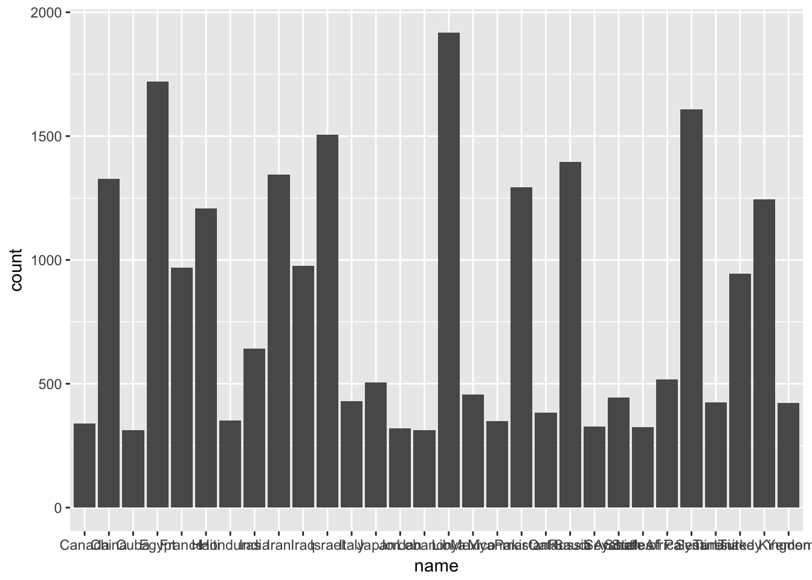
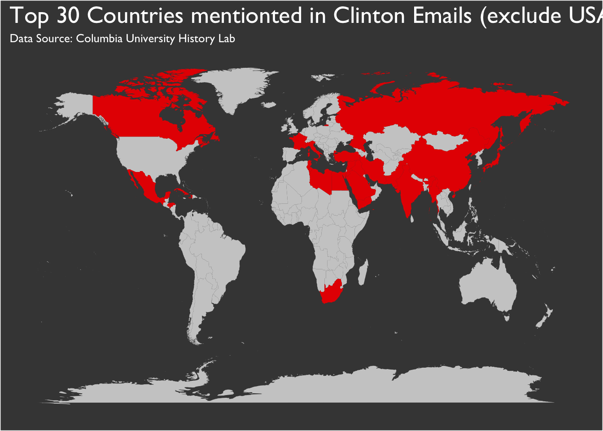

declass R Package for History Lab Declassification Engine APIDeclassification Engine API is provided by Columbia University History Lab.
library(httr)
library(jsonlite)
library(rvest)## Loading required package: xml2
declass_welcome()## [1] "Welcome to the Declassification Engine REST API"
declass_collection()## [1] "cpdoc" "clinton" "kissinger" "statedeptcables"
## [5] "frus" "ddrs" "cabinet" "pdb"clinton email collection ?
declass_collection_entity("clinton")## [1] "countries" "persons" "classifications"clinton emails ?By default, the function declass_entity_data shows 25 records per page and up to 10 pages, which means 250 records in total. However, you can customize it based on what you need. Here in clinton collection, we see that there’s a total of 200 countries. We don’t need more.
clinton_countries <- declass_entity_data("clinton", "countries")## [1] "http://api.declassification-engine.org/declass/v0.4/entity_info/?collection=clinton&entity=countries&page_size=25&page=1"
## [1] "http://api.declassification-engine.org/declass/v0.4/entity_info/?collection=clinton&entity=countries&page_size=25&page=2"
## [1] "http://api.declassification-engine.org/declass/v0.4/entity_info/?collection=clinton&entity=countries&page_size=25&page=3"
## [1] "http://api.declassification-engine.org/declass/v0.4/entity_info/?collection=clinton&entity=countries&page_size=25&page=4"
## [1] "http://api.declassification-engine.org/declass/v0.4/entity_info/?collection=clinton&entity=countries&page_size=25&page=5"
## [1] "http://api.declassification-engine.org/declass/v0.4/entity_info/?collection=clinton&entity=countries&page_size=25&page=6"
## [1] "http://api.declassification-engine.org/declass/v0.4/entity_info/?collection=clinton&entity=countries&page_size=25&page=7"
## [1] "http://api.declassification-engine.org/declass/v0.4/entity_info/?collection=clinton&entity=countries&page_size=25&page=8"
summary(clinton_countries)## count id name
## Min. : 1.0 Length:200 Length:200
## 1st Qu.: 19.0 Class :character Class :character
## Median : 54.5 Mode :character Mode :character
## Mean : 288.4
## 3rd Qu.: 151.0
## Max. :22719.0It looks like the dataset is highly skewed. We could only look at countries who are mentioned above the average count.
library(dplyr)##
## Attaching package: 'dplyr'## The following objects are masked from 'package:stats':
##
## filter, lag## The following objects are masked from 'package:base':
##
## intersect, setdiff, setequal, uniond <- clinton_countries %>%
knitr::kable(d)| name | count |
|---|---|
| United States | 22719 |
| Libya | 1918 |
| Egypt | 1719 |
| Syria | 1608 |
| Israel | 1505 |
| Russia | 1396 |
| Iran | 1345 |
| China | 1327 |
| Pakistan | 1294 |
| United Kingdom | 1245 |
| Haiti | 1209 |
| Iraq | 977 |
| France | 968 |
| Turkey | 945 |
| India | 642 |
| State of Palestine | 518 |
| Japan | 505 |
| Mexico | 456 |
| Seychelles | 445 |
| Italy | 430 |
| Tunisia | 425 |
| Yemen | 422 |
| Qatar | 383 |
| Honduras | 352 |
| Myanmar | 350 |
| Canada | 339 |
| Saudi Arabia | 328 |
| South Africa | 324 |
| Jordan | 320 |
| Cuba | 313 |
| Lebanon | 313 |
The country United States is what skewed the data. It’s not surprising to see in clinton’s email, as being the U.S. Secretary of State, she mentionted her own country the most. I will filter out the country United States, and see what other countries did Clinton mention the most in her emails.
d <- d %>%
library(ggplot2)

Here’s a small tutorial.
#install.packages("ggmap")
library(ggmap)
as.factor(d$name) %>% levels()## [1] "Canada" "China" "Cuba"
## [4] "Egypt" "France" "Haiti"
## [7] "Honduras" "India" "Iran"
## [10] "Iraq" "Israel" "Italy"
## [13] "Japan" "Jordan" "Lebanon"
## [16] "Libya" "Mexico" "Myanmar"
## [19] "Pakistan" "Qatar" "Russia"
## [22] "Saudi Arabia" "Seychelles" "South Africa"
## [25] "State of Palestine" "Syria" "Tunisia"
## [28] "Turkey" "United Kingdom" "Yemen"map_countries_joined <- map_countries_joined %>%
head(map_countries_joined)## long lat group order region subregion count fill
## 1 -69.89912 12.45200 1 1 Aruba <NA> NA FALSE
## 2 -69.89571 12.42300 1 2 Aruba <NA> NA FALSE
## 3 -69.94219 12.43853 1 3 Aruba <NA> NA FALSE
## 4 -70.00415 12.50049 1 4 Aruba <NA> NA FALSE
## 5 -70.06612 12.54697 1 5 Aruba <NA> NA FALSE
## 6 -70.05088 12.59707 1 6 Aruba <NA> NA FALSE
ggplot() + geom_polygon(data = map_countries_joined, aes(x = long, y = lat, group = group, fill = fill)) +
subtitle = "Data Source: Columbia University History Lab") +
panel.grid = element_blank(),
axis.text = element_blank(),
axis.title = element_blank(),
axis.ticks = element_blank(),
legend.position = "none")